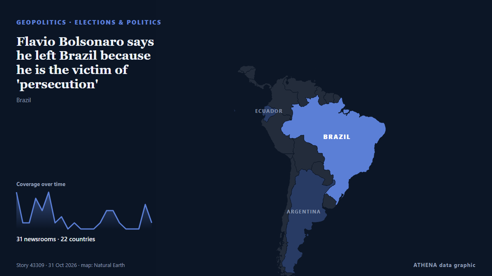

Flavio Bolsonaro says he left Brazil because he is the victim of 'persecution'

BRASILIA: Former conservative presidential candidate Flavio Bolsonaro said on Friday that he fled Brazil for the United States because he was a victim of “persecution” in his country. από New Straits Times
Αναφέρθηκε ανεξάρτητα από 31 μέσα σε 22 χώρες από τις 28 Οκτ, πρώτο από το Gulf News· η κάλυψη εξασθενεί. Το ATHENA εκτιμά τον κίνδυνο χαμηλό (1.8/10), κυρίως λόγω της σοβαρότητας της βλάβης που περιγράφεται και της γεωγραφικής και τομεακής εμβέλειάς του. Η βεβαιότητα είναι 91% (υψηλή), καθώς το επιβεβαιώνουν 31 ανεξάρτητα μέσα με μέση αξιοπιστία πηγών 76%. Ποιοι το ανέφεραν: 4 μέσα στη χώρα Μαλαισία · Malaysia, 3 μέσα στη χώρα Αργεντινή · Argentina, 3 μέσα στη χώρα Βραζιλία · Brazil. Η κάλυψη διήρκεσε από 28 Οκτ έως 31 Οκτ, 64 ώρες.
Γιατί έχει σημασία: Οι εξελίξεις στην ασφάλεια και τη διπλωματία μπορούν να μετατοπίσουν συμμαχίες, εμπόριο και αγορές πολύ πέρα από τις χώρες που εμπλέκονται.
Τι άλλαξε: 13 νέες αναφορές από 11 μέσα στο 24ωρο έως 31 Οκτ.
Πρώτη διατύπωση: Flávio Bolsonaro arrives in Florida after fleeing Brazil
Οι τίτλοι των ειδήσεων παρουσιάζονται στα αγγλικά, όπως δημοσιεύτηκαν.
Με μια ματιά
Επιλέγεται, βαθμολογείται και γράφεται από τη δημοσιευμένη μεθοδολογία του ATHENA. Κανένας συντάκτης δεν παρεμβαίνει σε μεμονωμένα γεγονότα. Πώς παράγεται ›
| 28 Oct 13:58 UTC | 6 |
|---|---|
| 28 Oct 16:58 UTC | 1 |
| 28 Oct 19:58 UTC | 1 |
| 28 Oct 22:58 UTC | 5 |
| 29 Oct 01:58 UTC | 3 |
| 29 Oct 04:58 UTC | 6 |
| 29 Oct 07:58 UTC | 1 |
| 29 Oct 10:58 UTC | 2 |
| 29 Oct 13:58 UTC | 0 |
| 29 Oct 16:58 UTC | 1 |
| 29 Oct 19:58 UTC | 0 |
| 29 Oct 22:58 UTC | 0 |
| 30 Oct 01:58 UTC | 0 |
| 30 Oct 04:58 UTC | 1 |
| 30 Oct 07:58 UTC | 3 |
| 30 Oct 10:58 UTC | 3 |
| 30 Oct 13:58 UTC | 1 |
| 30 Oct 16:58 UTC | 0 |
| 30 Oct 19:58 UTC | 0 |
| 30 Oct 22:58 UTC | 0 |
| 31 Oct 01:58 UTC | 4 |
| 31 Oct 04:58 UTC | 1 |
| 28 Oct 14:25 UTC | 0.0 |
|---|---|
| 29 Oct 06:15 UTC | 1.9 |
| 31 Oct 06:25 UTC | 1.8 |
Γιατί αυτοί οι αριθμοί
Σημασία
Κίνδυνος
Βεβαιότητα
Η κάλυψη — ποιος το ανέφερε και πότε
ο τίτλος όπως δημοσιεύτηκε · ανοίγει το πρωτότυπο- Gulf News · Ηνωμένα Αραβικά Εμιράτα · United Arab EmiratesBolsonaro disembarks plane after landing in Florida
- Al Jazeera English · Κατάρ · QatarBolsonaro turns up in Florida after vanishing from public view
- Xinhua (English) — page reader · Κίνα · ChinaFlavio Bolsonaro arrives in Florida after election loss in Brazil
- Buenos Aires Times · Αργεντινή · ArgentinaFlávio Bolsonaro arrives in Florida, fleeing Brazil after losing election
- Daily Tribune · Φιλιππίνες · PhilippinesBolsonaro flees Brazil for US after election defeat: AFP
- Punch · Νιγηρία · NigeriaBolsonaro, family arrive in US after election defeat
- Sydney Morning Herald · Αυστραλία · AustraliaFlavio Bolsonaro arrives in Miami
- NPR World · Ηνωμένες Πολιτείες · United StatesBrazilian political drama unfolds as defeated Flavio Bolsonaro arrives in Miami
- Türkiye Today · Τουρκία · TurkeyFlavio Bolsonaro vows to lead Brazil’s opposition from Florida
- Free Malaysia Today · Μαλαισία · MalaysiaBolsonaro claims he is Brazil’s true leader after fleeing to US
- NPR World · Ηνωμένες Πολιτείες · United StatesFlávio Bolsonaro arrives in Florida after fleeing Brazil
- Anadolu Agency (English) · Τουρκία · TurkeyFlavio Bolsonaro claims Brazil’s presidency in 1st public address from US exile
- MercoPress · Ουρουγουάη · Uruguay“True president”, then “leader”: Bolsonaro’s letter from the United States
- Al Jazeera English · Κατάρ · QatarBolsonaro in Miami: I am the ‘true president-elect’
- The Daily Star — page reader · Μπανγκλαντές · BangladeshBolsonaro claims he is Brazil's true leader after fleeing to US
- APA (English) · Αζερμπαϊτζάν · AzerbaijanFlavio Bolsonaro declares himself rightful president-elect of Brazil
- Euronews English · Γαλλία · FranceBolsonaro claims he is Brazil's true leader after fleeing to US
- NDTV · Ινδία · India'True Leader' Flavio Bolsonaro Vows To "Lead" Brazil Opposition From US
- News of Bahrain · Μπαχρέιν · BahrainFlávio Bolsonaro Claims to Be Brazil’s ‘Rightful Leader’ After US Arrival
- The Rio Times · Βραζιλία · BrazilThe Big Read: Brazil, Thursday 29 October
- TheJournal.ie · Ιρλανδία · IrelandBolsonaro claims he is Brazil's rightful leader after losing election and fleeing to the US
- Nile Post · Ουγκάντα · UgandaFlávio Bolsonaro denies fleeing Brazil after landing in Miami
- The Irish News (Belfast) · Ηνωμένο Βασίλειο · United KingdomBrazil’s Bolsonaro flees to US after electoral defeat
- Agência Brasil (English) · Βραζιλία · BrazilCoup-mongering letter: Flávio Bolsonaro thanks Trump, Milei for aid
- Buenos Aires Herald · Αργεντινή · ArgentinaFlávio Bolsonaro thanks Milei, Trump in letter saying he is Brazil’s ‘leader’
- The Rio Times · Βραζιλία · BrazilBolsonaro’s Son Thanks Trump, Disputes Loss
- Gulf News · Ηνωμένα Αραβικά Εμιράτα · United Arab EmiratesBrazil's Flavio Bolsonaro isolated, ridiculed after self-exile
- The Straits Times · Σιγκαπούρη · SingaporeTrump not planning to back Bolsonaro's claim to be Brazil's leader, sources say
- Free Malaysia Today · Μαλαισία · MalaysiaTrump administration has no plans to back Bolsonaro’s claim to Brazil leadership
- The Independent · Ηνωμένο Βασίλειο · United KingdomHow Donald Trump’s allies helped Flavio Bolsonaro flee Brazil
- OilPrice.com · Ηνωμένο Βασίλειο · United KingdomBolsonaro’s Election Defeat Could Complicate U.S. Rare Earth Plans
- Cyprus Mail · Κύπρος · CyprusBolsonaro’s claim to be Brazil’s leader not backed by Trump
- AzerNews · Αζερμπαϊτζάν · AzerbaijanFlavio Bolsonaro may receive US green card through expedited process
- Buenos Aires Herald · Αργεντινή · ArgentinaBolsonaro’s party head says nobody knew he would leave Brazil
- New Straits Times · Μαλαισία · MalaysiaFlavio Bolsonaro says he left Brazil because he is the victim of 'persecution'
- The Straits Times · Σιγκαπούρη · SingaporeFlavio Bolsonaro says he left Brazil because he is the victim of ‘persecution’
- Free Malaysia Today · Μαλαισία · MalaysiaBolsonaro says he left Brazil because he is the victim of ‘persecution’
- ABC News Australia · Αυστραλία · AustraliaFlavio Bolsonaro says in livestream he left Brazil due to 'persecution'
- France 24 English · Γαλλία · FranceFlavio Bolsonaro posts video, says he fled Brazil due to ‘persecution’